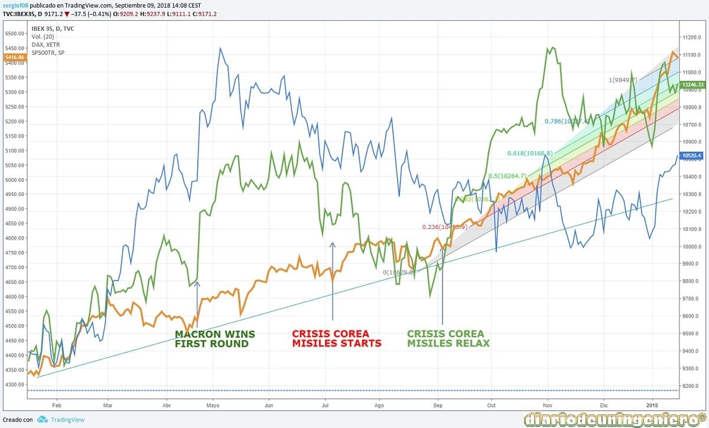

There have been no stock market periods that have brought so many incognitas like this.
On the one hand we have the presidency of Trump that so many headaches has brought most of the political and economic analysts.
On the other hand, a fragile Europe with challenges such as the Brexit or the elections in France that in case of having fallen in Lepen would have triggered in a hecatomb hard to imagine.
In addition, the tensions with North Korea in the seas of Japan and the tensions by the power in the war of Syria, with Russia, the United States and Turkey like protagonists.
Everyone expected that the year would end with a strong dollar reaching equal to the euro and the opposite would happen. As soon as the year began and he took office, Trump would deliver a speech full of symbolism.
In it he emphasized the idea of closing his country and having a minimal foreign policy, prioritizing the internal problems of his country. I charge harshly against the pharmaceutical sector and against Europe, saying that America always had to go behind Europe.
He also started talking about a change in his trade policy with the rest of the countries, including the tariff idea and the idea of a weaker dollar to increase his exports.
This was a real time bomb, in which the fall of the dollar despite the rise in rates and the economic bonanza of the United States with almost full employment would be evident.
This instability and uncertainty in his words made the mining fever sick, in which the ounce of gold shot to maximum levels in 3 years.
At the same time as gold rose and the euro rose due to the decline of the dollar, the European indexes stagnated. From January to mid-February there was no increase in the indexes. And I was beginning to sound the leftover of the Frexit .
And in France there were elections in which nothing less than the integrity of the European Union was played. With the booms of populism in England, Holland and Austria a new axis had emerged with Le Pen and the French extreme right.
In February it would be the French elections in the first round but something surprising. The new party of the independent Macron with his party On Marche, beat the socialist party Frances and the party of right of Fillon the UMP.
And he would fight with Le Pen in the presidential elections. This change already assured that Macron would win due to the sympathy for liberal economic policies in France, close to the UMP and his smile to the ideals of French social socialism.
This effect would take off all European stock markets to record levels not seen since 2015. Reaching the IBEX the 11000 points or the 12500 in the German DAX, record levels since 2008.
This level was reached just a week before the French elections, which suggested that the electoral results in favor of Macron were discounted.

From there for the IBEX and nothing would be as before not reaching this level to reach throughout the year, closing around the 10300 points that is what he predicted at the end of the previous year.
In the summer of this year nothing memorable would happen on the map of indices, for the well-known summer relax. However, volatility in the currency and raw materials were assured.
And is that since early July to early September gold would vary from about 1200 points due to the clearance of a France outside the EU to 1350 points, maximum since 2008 due to doubts between an attack by the United States to the People's Republic of North Korea for its constant launch of missiles and its atomic tests.
These attacks would reappear the following year although the hope came when announcing that North Korea would accede to meetings about its atomic program at the start of the winter games of 2018 in neighboring South Korea.
 The year 2017 will be remembered no doubt by the missile launch record, in which nearly 25 missiles were fired, perfecting the technique over time.
The year 2017 will be remembered no doubt by the missile launch record, in which nearly 25 missiles were fired, perfecting the technique over time.
The launch of July 29 would mark a before and after due to the range of reach and may already reach the West Coast of America. In addition, it was no less unusual to fly over Japan, which could have a casus bellis to start any operation.
On September 3, Korea would conduct a nuclear test, which also affirmed that it had managed to miniaturize the bomb. The pump of Korea with hydrogen technology would have a destruction power of 70 kilotons, 4 times higher than those that the USA launched against Japan in the Second World War. It could also be coupled to a ballistic missile like the one launched on July 29. North Korea also claimed to be able to produce warheads from this chain model.
With all this, the reaction of the markets did not wait at all, producing generalized decreases in the indexes and a resurgence of appreciation of the precious metals before any intervention by the United States. However shortly after this trial and before the march of time, this rebound of gold was softening to levels somewhat normal for this year, the 1250 would climb again to the verbal threat of the North Korean leader.
In the following graph you can see how these events triggered a fear in the world economy that had not been seen since the Brexit. It is quite paradoxical that when the world economy is at a better level with the United States and interest rates are rising steadily, gold will suffer these increases.
At the beginning of the year, one of the biggest turbulence in Catalan values in the history of the Spanish stock market began. This was due to the attempt of the Catalan institutions to hold a referendum in a clandestine manner in which only a part of Catalan society would vote. This would strain the price of Catalan companies and values, due to the future punishment of their clients.
The consequences would take time to arrive but as messages were being sent by certain actors belonging to the independence world, the capitalization of companies based in Catalonia would begin to notice a serious setback.
The most affected in this case have been the Catalan banks of the IBEX35, such as Sabadell and Caixabank, but because we live in a globalized world, although some do not want to recognize it, as are those who try to separate themselves from the rest as if the rest were not with them. all the other Spanish banks also fell and therefore other IBEX35 values away from the problems of Catalonia. So much is the globalized economy that the Eurostox also had its fall but if we compare as it was a year ago the German DAX30 we will see how it has been maintained and the IBEX35 has seriously retreated as a 10% more, being paradoxical that Spain presents some bigger growth data than those of Germany.
The following graph shows the impeccable rise of Caixabank until the winds of independence and its correlation with the IBEX begin to blow.

© 2016 - All Rights Reserved - Diseñada por Sergio López Martínez
![[Valid RSS]](https://www.feedvalidator.org/images/valid-rss-rogers.png "Validate my RSS feed")